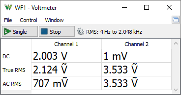
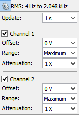

The Voltmeter uses the oscilloscope channels. When the Voltmeter is running, it takes control over the physical oscilloscope channels and the Oscilloscope instrument state is “busy”. Similarly, when the Oscilloscope is started, the Voltmeter is stopped. The DC, AC, and DC RMS values are calculated from oscilloscope sweeps. For the True RMS value, the same acquisition is used as for the DC voltage, and the value is calculated with the formula Sqrt( sum( xi ^ 2 ) / N ). The AC RMS value is calculated with the formula Sqrt( sum( (xi - dc) ^ 2 ) / N ).

Under options, the update rate can be set, scope channels enabled or disabled, range and offset configured, and attenuation specified.
The Update rate together with the device buffer size determines the RMS frequency range.